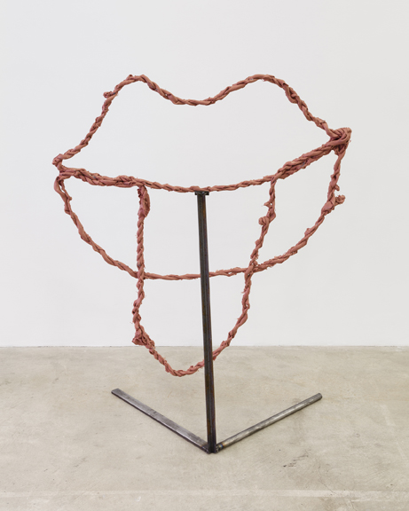

SLIPPERY
October 16 - November 8, 2014
Kelly Akashi
Lupo Borgonovo
Michael Buthe
Martin Soto Climent
Elias Hansen
Lena Henke
Jory Rabinovitz
Jesse Stecklow
Paul Thek
Organized by Taylor Trabulus
Open through Saturday, November 8th
The title of the exhibition, Slippery, draws directly from Dali’s theory of “hardness and softness” as expressed by the melting clock in his iconic painting The Persistence of Memory (1931). Dripping, drooping, twisting, and melting, the works on view encourage ineffable, transient interactions with their viewers through subtle interventions of everyday materials and objects. Newly realized forms appear and feel familiar albeit in a distorted fashion. Within these works the viewer is invited to gaze upon the uncanny—reality bent into a new manner— and reflect upon the ethereal “slipperiness” of human perception and understanding.
Gallery Hours:
Tuesday - Saturday
10 am - 6 pm
For inquiries and press requests, please call 212-560-0670 or email info@martosgallery.com.